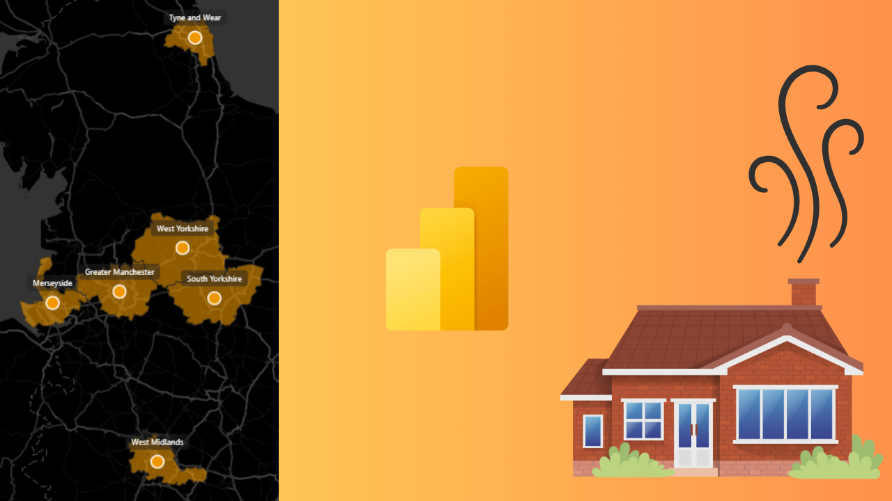
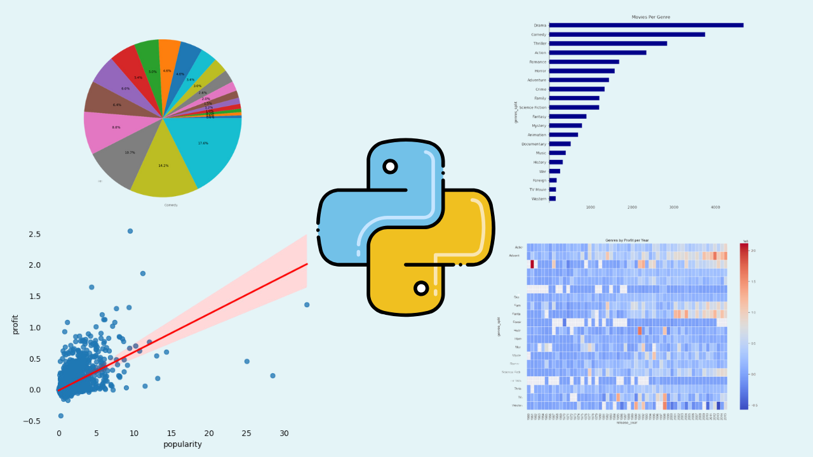
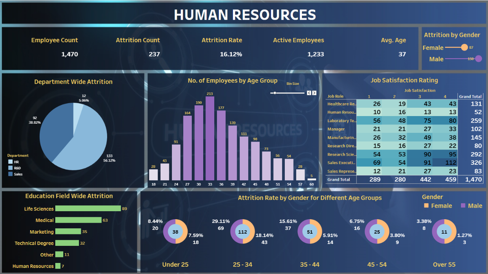
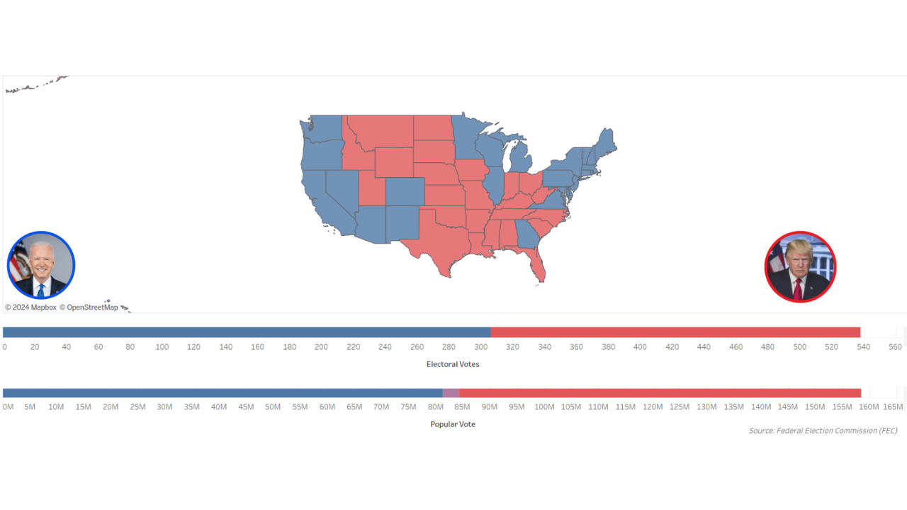
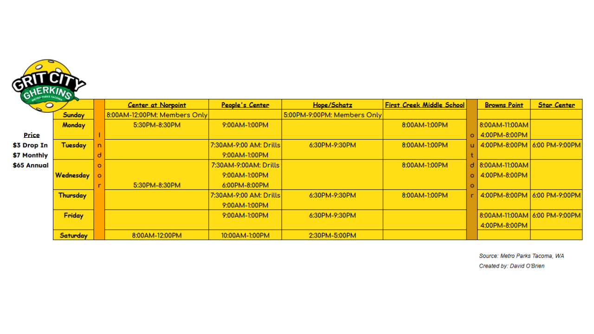
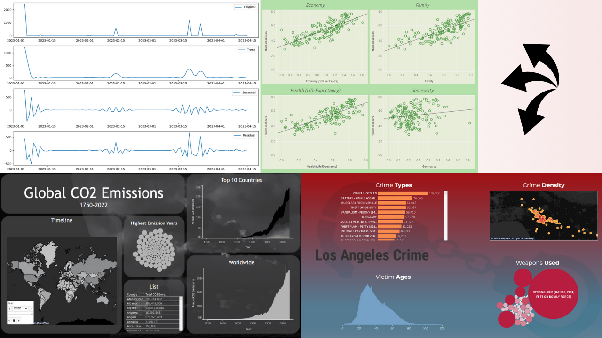

In this advanced analysis, I use SQL Server Management Studio to analyze a mock healthcare dataset. The process involves cleaning data by deduplication and correcting inconsistencies. I ensure data integrity and then perform key analysis on the whole database. Featured findings include identifying hospitals with the most visits, uncovering common medical conditions and analyzing billing trends. I also look at patient readmission rates, financial records, and resource allocation. All of these techniques are applicable to real hospital networks.
In depth financial analysis of England's House Pricing Index. Utilizes Microsoft Power BI, DAX, and M to discover cost trends across 6 regions. Includes a wide range of charts with drillthroughs and drill downs. Each page can be cross-filtered and/or cross-highlighted to discover unique insights.


Researching trends in movie genres across IMDB's database, and testing hypotheses about correlations between profit, revenue, and popularity.

Comprehensive analysis of user behavior for a fictional bike-share company to inform business decisions and increase memberships. Leveraged R, SQL, Excel and Tableau to clean and analyze over 300,000 records, uncovering key insights about user types, demographics, and peak usage patterns. Delivered actionable recommendations, including targeted subscription packages and marketing strategies, supported by advanced data visualizations and geospatial analysis.

With this interactive dashboard, businesses can gain a better understanding of their analytics, such as attrition rates, employee education, age, and gender discrepancies!

Analysis of the 2020 U.S. presidential election, using raw data from the Federal Election Commission (FEC). Explored voting patterns across all 50 states with maps using spatial data. Highlights include comparative charts for advanced analysis and interesting descriptive insights.

Restructured scattered information from Metro Parks Tacoma's Pickleball website into a uniform, aesthetically pleasing graphic using Excel. This visualization integrates key details such as pricing, times, and locations, and even differentiates between indoor and outdoor court availability. The cohesive schedule improves accessibility and user experience (UX) by providing clear and organized information at a glance.
SQL analysis of correctional facilities in the United States, including cross comparing healthcare statistics. How do mental health and incarceration rates impact eachother?

Investigating Global CO2 Emissions, Los Angeles Crime, World Happiness Data, and so much more!
LET'S CONNECT!